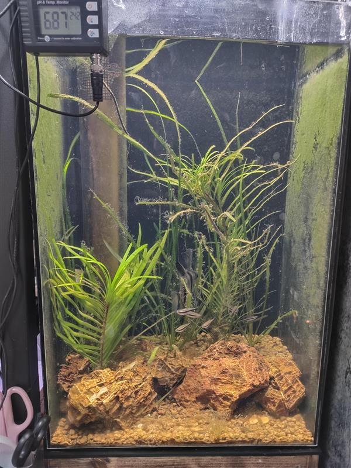
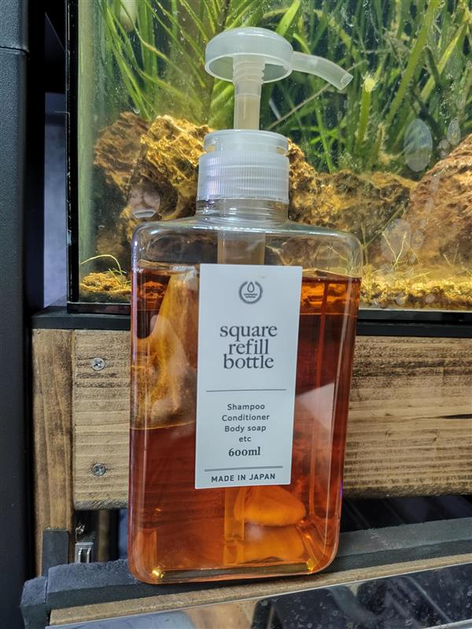
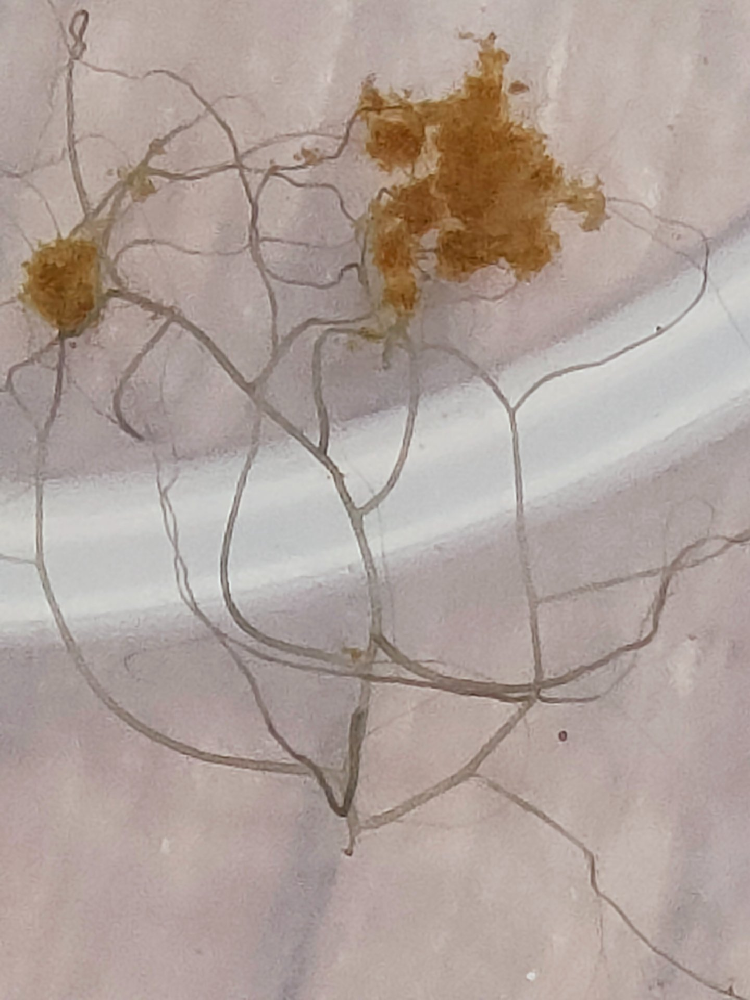
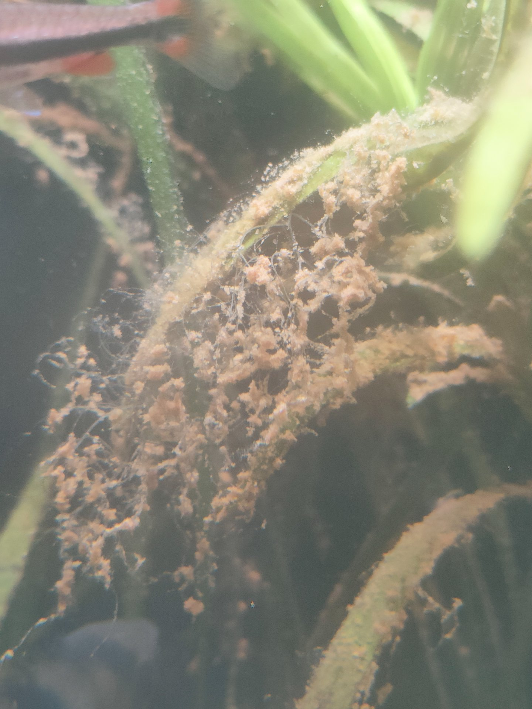

毎日炭素源エキスをサンプへ1プッシュ
毎日水槽を眺める（異常確認）
随時水が減ったら足し水
随時水草が伸びたらトリミング
以下は著者が実際に採用した具体的な構成である。第３章の汎用的手順を本環境に適用した実装例として参照されたい。
水槽システムの物理的な構成を以下に示す。
| 項目 | 詳細 |
|---|---|
| 水槽サイズ | 40×60×30cm（縦長・特注品） |
| サンプ | 30cmハイタイプ |
| 底床 | 焼赤玉土（硬質）— 弱酸性緩衝作用（pH 6.85付近） |
| サンプ内ろ材 | 焼赤玉土（硬質）を敷き詰め |
| レイアウトストーン | 古葉石（チャーム） |
| 照明 | ブリム パネルA（植物用ライト） |
| 水温 | 25〜26℃（ヒーター管理） |
メインタンクの生体構成を以下に示す。低層から頂点捕食者まで、食物連鎖の各層を意識して選定している。
| 生体 | 数 | 層・役割 |
|---|---|---|
| エンゼルフィッシュ | 3 | 頂点捕食者 |
| ナノストムス・ベッコフォルディ | 7 | 中〜上層 |
| リングローチ | 1 | 低層 |
| ホンコンプレコ | 2 | 低層・コケ取り |
| アベニーパファー | 1 | 中層・スネール駆除 |
| ヒメツメカエル | 3 | 低〜中層 |
| ミナミヌマエビ | 複数 | 低層・清掃 |
| ラムズホーン | 複数 | 低層・分解 |
イトミミズ・ヨコエビ・ミナミヌマエビ等を投入。フルオート方式（ポンプ通過サイズ）を採用している。
エイクホルニア・アズレア、バリスネリアの2種を植栽。CO₂無添加で十分に生育している。

3種の炭素源を以下の比率で混合し、ポンプボトルに充填する。
| 原材料 | 量 | 有効成分 | 分解速度 |
|---|---|---|---|
| ウォッカ（40%） | 200 ml | エタノール ≈ 63g | 速効性 |
| 米酢（酸度4.2%） | 50 ml | 酢酸 ≈ 2.2g | 中速 |
| グラニュー糖 | 15 g | スクロース 15g | 緩効性 |
炭素量ベースの比率はエタノール : 酢酸 : スクロース ≈ 82 : 2 : 16。上記をすべて混合し、ポンプボトルに充填する。ウォッカのアルコールが防腐剤として機能するため、常温保存が可能である。

炭素源エキスのベース液（ウォッカ＋米酢）は、そのまま微量元素の抽出溶媒として機能する。エタノールは水よりも広範な有機物を溶解でき、酢酸はカルシウム等の鉱物を酸で溶出させる。この2つの溶媒に素材を漬け込むことで、炭素源の投入と微量元素の補給を一本化でき、別途液肥を購入・投与する手間とコストを排除できる。以下は著者が使用した素材の一例であり、目的のミネラルを供給できる素材であれば代替可能である。
| 素材 | 供給する元素 |
|---|---|
| 藻塩 | Na・K・Mg・Ca・ヨウ素 |
| バナナ（可食部） | カリウム・Mg |
| ルイボスティー | Ca・K・Zn・Mn等 |
運用開始から約1年後、サンプ内に淡水性ヒドロ虫群体と考えられる生体の着生が確認された。樹状に分岐したストロン（匍匐茎）を伸ばし、水草やガラス面に密に着生する。淡水環境での報告例が少ない刺胞動物であり、本システムの豊富なバクテリア・微小甲殻類がヒドロ虫の定着を可能にした可能性がある。生態系の複雑化を示す興味深い観察事例として記録する。


pH 6.85が1年間にわたり安定的に維持されている。この結果は、硝化プロセスが事実上バイパスされていること——すなわち、硝酸によるpH低下が発生していないこと——を示唆するデータである。焼赤玉土の緩衝平衡点と一致しており、第１章 セクション4の「pHロック」仮説を支持する観察結果といえる。
維持管理は実質的に「1プッシュと眺めること」に収束する。
本システムの導入に必要な主な資材とそのコスト・入手先を以下に示す。
| 項目 | コスト | 入手先 |
|---|---|---|
| オーバーフロー水槽 | 高め（最大のハードル） | アクアリウムショップ・通販 |
| 焼赤玉土 | 安価 | ホームセンター |
| ウォッカ・米酢・グラニュー糖 | 安価 | スーパー |
| 藻塩・バナナ・ルイボスティー | 安価 | スーパー |
| ベントス類 | 安価〜無料 | 釣具店・採取等（入手性が難点） |
オーバーフロー水槽さえ用意できれば、ランニングコストはほぼゼロに近い。